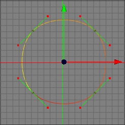
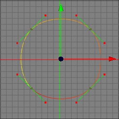

Soft Interpolation Tool
The soft interpolation tool is a very useful tool if you want to create smooth looking splines. It repositions the tangents of the spline (only Beziere splines) in such a way that you get a smooth curve at the control points.
 

Modes
The smooth interpolation tool is available in all modes. Note that it makes most sense to use it in point mode since you can only see the control points and tangents in point mode. This spline tool only works on raw spline objects.


To use the soft interpolation tool, you first have to select the control points of the spline which should be smoothed with the select tool. Once you've made your selection call the menu command "Tools SplineSoft Interpolation". The tangents of all selected control points will now be repositioned to create a smooth looking spline.
SplineSoft Interpolation". The tangents of all selected control points will now be repositioned to create a smooth looking spline.
Keys
- none
Properties
- none